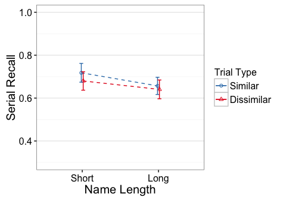
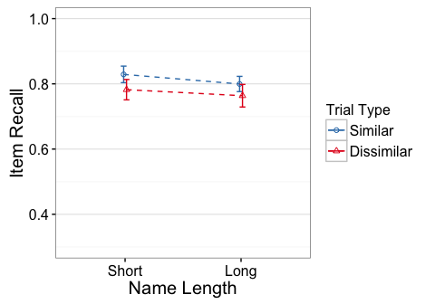

e4 - Rspan.names.long, Rspan.names.short
library(knitr)
opts_knit$set(self.contained=TRUE, root.dir="../")
opts_chunk$set(fig.cap="", error=TRUE, cache=FALSE, echo=FALSE, fig.width=5, fig.height=3.5)
Descriptives
N
## task trialtype Participants
## 1 Rspan.names.long D 17
## 2 Rspan.names.long S 17
## 3 Rspan.names.short D 17
## 4 Rspan.names.short S 17
Residual Check
Scatterplots of Similar vs Dissimilar

gray line has intercept=0, slope=1. Blue line is regression fit.
Averaged across similarity conditions (and z-scored)
## Warning: `position` is deprecated

Effect Plots
Standard errors are between group



ACC.ser
Error: Unique_ID
Df Sum Sq Mean Sq F value Pr(>F)
task 1 0.0427 0.04269 0.751 0.393
Residuals 32 1.8191 0.05685
Error: Unique_ID:trialtype
Df Sum Sq Mean Sq F value Pr(>F)
trialtype 1 0.01261 0.012608 2.512 0.123
task:trialtype 1 0.00202 0.002017 0.402 0.531
Residuals 32 0.16061 0.005019
Partial Eta-square
eta.2
task 0.02292673
trialtype 0.07278444
task:trialtype 0.01240387
Simple Effects
Short
Error: Unique_ID
Df Sum Sq Mean Sq F value Pr(>F)
Residuals 16 0.9465 0.05916
Error: Unique_ID:trialtype
Df Sum Sq Mean Sq F value Pr(>F)
trialtype 1 0.01236 0.012356 2.568 0.129
Residuals 16 0.07698 0.004811
eta.2
trialtype 0.1383087
Long
Error: Unique_ID
Df Sum Sq Mean Sq F value Pr(>F)
Residuals 16 0.8726 0.05454
Error: Unique_ID:trialtype
Df Sum Sq Mean Sq F value Pr(>F)
trialtype 1 0.00227 0.002269 0.434 0.519
Residuals 16 0.08364 0.005227
eta.2
trialtype 0.02641775
ACC.item
Error: Unique_ID
Df Sum Sq Mean Sq F value Pr(>F)
task 1 0.0098 0.009764 0.376 0.544
Residuals 32 0.8320 0.025999
Error: Unique_ID:trialtype
Df Sum Sq Mean Sq F value Pr(>F)
trialtype 1 0.02913 0.029129 11.440 0.00191 **
task:trialtype 1 0.00050 0.000504 0.198 0.65928
Residuals 32 0.08148 0.002546
---
Signif. codes: 0 '***' 0.001 '**' 0.01 '*' 0.05 '.' 0.1 ' ' 1
Partial Eta-square
eta.2
task 0.011599204
trialtype 0.263359475
task:trialtype 0.006151575
Simple Effects
Short
Error: Unique_ID
Df Sum Sq Mean Sq F value Pr(>F)
Residuals 16 0.4095 0.02559
Error: Unique_ID:trialtype
Df Sum Sq Mean Sq F value Pr(>F)
trialtype 1 0.01865 0.018650 9.874 0.0063 **
Residuals 16 0.03022 0.001889
---
Signif. codes: 0 '***' 0.001 '**' 0.01 '*' 0.05 '.' 0.1 ' ' 1
eta.2
trialtype 0.3816305
Long
Error: Unique_ID
Df Sum Sq Mean Sq F value Pr(>F)
Residuals 16 0.4225 0.02641
Error: Unique_ID:trialtype
Df Sum Sq Mean Sq F value Pr(>F)
trialtype 1 0.01098 0.010984 3.429 0.0826 .
Residuals 16 0.05126 0.003204
---
Signif. codes: 0 '***' 0.001 '**' 0.01 '*' 0.05 '.' 0.1 ' ' 1
eta.2
trialtype 0.1764706
ACC.order
Error: Unique_ID
Df Sum Sq Mean Sq F value Pr(>F)
task 1 0.0237 0.0237 0.996 0.326
Residuals 32 0.7617 0.0238
Error: Unique_ID:trialtype
Df Sum Sq Mean Sq F value Pr(>F)
trialtype 1 0.00195 0.001949 0.350 0.558
task:trialtype 1 0.00044 0.000435 0.078 0.782
Residuals 32 0.17806 0.005564
Partial Eta-square
eta.2
task 0.030171349
trialtype 0.010829901
task:trialtype 0.002437748
Simple Effects
Short
Error: Unique_ID
Df Sum Sq Mean Sq F value Pr(>F)
Residuals 16 0.3746 0.02341
Error: Unique_ID:trialtype
Df Sum Sq Mean Sq F value Pr(>F)
trialtype 1 0.00027 0.000271 0.042 0.84
Residuals 16 0.10313 0.006445
eta.2
trialtype 0.002623665
Long
Error: Unique_ID
Df Sum Sq Mean Sq F value Pr(>F)
Residuals 16 0.3871 0.0242
Error: Unique_ID:trialtype
Df Sum Sq Mean Sq F value Pr(>F)
trialtype 1 0.00211 0.002113 0.451 0.511
Residuals 16 0.07493 0.004683
eta.2
trialtype 0.02743009